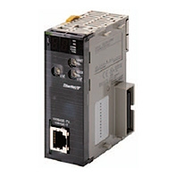

The ODVA promotes the spread of Industrial Ethernet all over the world.
Building Automation
Industrial Automation
Power Automation & Safety


Bangladesh Distributor
CJ1W-EIP21
CJ-series EtherNet/IP Unit

Introducing the New EtherNet/IP Unit. More Than 180,000 Words of Tag Data Link Capacity!
about this Product Family
Related Contents
- Automation Systems
- Programmable Controllers
- Features
- Lineup
- Specifications
- Dimensions
- Catalog
last update: October 11, 2016
Global Standard
Highly Open Global Standard for FA Industry with High Future Potential
EtherNet/IP can be used to communicate with many devices from various companies around the world in addition to OMRON components (such as Temperature Controllers and Sensors). The use of EtherNet/IP will rapidly increase the development of an EtherNet/IP multivendor environment (including robots and safety devices).
Integrated Information and Control Network
Seamless communications on the control line and information monitoring line with EtherNet/IP
Using the global standard open protocol (CIP), an independent network system can be created with seamless data flow between the control line and the information monitoring line.
OMRON FINS message communications can also be used on the same network because it is a standard LAN.
Improved operation efficiency with common Support Software operation
Use the same operating procedures for both EtherNet/IP and DeviceNet Support Software.
The same Support Software procedures can be used from a remote location for device configuration, monitoring, and program transfer for the DeviceNet and EtherNet/IP networks.
Monitor Safety Systems
Safety systems can be monitored through the EtherNet/IP.
The safety system can be monitored from a PLC by using a modular designed Safety Control Unit with a EtherNet/IP Coupler Unit.
Convenience of the Universal Ethernet Right in Your Hands
Higher Data Link Capacity (9 times the capacity of previous OMRON models)
High-capacity communications with high-speed high-capacity bus
All types of data, from process interlocks and manufacturing recipes to production data, can be exchanged at high speed and with optimal timing. The ability to communicate is incomparably better than previous networks, such as the Controller Link and FL-net.
Note: Using a built-in EtherNet/IP port on CJ2H and EtherNet/IP Units.
Low Cost Expansion for Each Line
Flexible topology with the Ethernet switch
Flexible wiring and expansion are possible with Ethernet switches. This means that there will be no total network crashes caused by communications path errors, ensuring high network performance and security.
- Joining and leaving the network is possible during communications.
Nodes can leave the network during operation, enabling easy maintenance for error detection, separation, and restoration.
- Unpredictable delays caused by data collisions are minimum.
- Problems caused by wiring errors are minimized to each line.
Star topology using Ethernet switch technology
Reduced Network Facility and Wiring Costs
Generic LAN cables can be used.
- Metal cables of category 5, 5e, or higher can be used as LAN cables.
- Generic RJ-45 connectors can be used.
Standard wireless LAN can be used because EtherNet/IP is also Universal Ethernet.
There is no need to rewire even when layout has been changed.
- EtherNet/IP can be made wireless using the standard wireless LAN.
- High-speed Smart Roaming communications can be used for mobile units with the WE70 FA Wireless LAN. The
communications range can be expanded by relaying communications between access points.
- High-speed Smart Roaming communications can be used for mobile units with the WE70 FA Wireless LAN. The
communications range can be expanded by relaying communications between access points.
Integration of Control and Information Networks
High-speed Data Links with Optimal Cycles for Applications (30 times higher than previous OMRON models)
Flexible and high-speed cyclic communications
- Grouping can be used in data link tables to create multiple sections.
Data link table can be divided into up to 256 groups (= connections).
The optimum communications cycle for the application can be set for each group.
- Cyclic synchronization can be set for each group.
The communications cycle can be set to between 0.5 ms and 10 s in 0.5-ms increments. Data concurrency is
maintained for each connection. The communications cycle does not change even if the number of nodes increases.
The communications performance is 30 times better than that of the Controller Link.
Example:
Data link refresh cycle for 25 linked Unit and 20,000 words/network is reduced from 300 ms to 10 ms.
- Facilities can be easily expanded.
When expanding facilities, all you need to do is make additions to the tables. Expansion is possible with little time and
low cost.
Note: Using a built-in EtherNet/IP port on CJ2H and EtherNet/IP Units.
Data link table can be divided into up to 256 groups (= connections).
The optimum communications cycle for the application can be set for each group.
- Cyclic synchronization can be set for each group.
The communications cycle can be set to between 0.5 ms and 10 s in 0.5-ms increments. Data concurrency is
maintained for each connection. The communications cycle does not change even if the number of nodes increases.
The communications performance is 30 times better than that of the Controller Link.
Example:
Data link refresh cycle for 25 linked Unit and 20,000 words/network is reduced from 300 ms to 10 ms.
- Facilities can be easily expanded.
When expanding facilities, all you need to do is make additions to the tables. Expansion is possible with little time and
low cost.
Note: Using a built-in EtherNet/IP port on CJ2H and EtherNet/IP Units.
FTP, Data Links, and Support Software Can Be Used Simultaneously with One Port
With the multipurpose EtherNet/IP port, an Ethernet Unit is not required for expansion.
Using the multipurpose EtherNet/IP port built into a CJ/NJ/NX/NY CPU Unit, a single port can be used for data link communications between PLCs, messages between PLCs, and Universal Ethernet communications, such as FTP transfers while connecting Support Software. An EtherNet/IP Unit can be added to any CS/CJ-series PLC to achieve the same functions.
Memory Map Management Becomes Unnecessary.
Freed from memory map by tags
The transmission/reception area can be specified with normal names called tag names instead of addresses for communication on data links between devices or when communication with the host application.
The efficiency of design, startup, maintenance, and upgrading are improved.
- PT and host applications can be developed in parallel.
Network symbols defined in CJ/NJ/NX/NY CPU Units can be used as tags when designing the PT screen.
Design is easy: Just decide on the tag names for the information and control departments.
Changes to allocated addresses is not needed later in development.
- Easier facility upgrading and maintenance
Even if physical addresses change in the PLC, there is no need to make any changes in the data link settings, in the
PT, or in the host application.
The efficiency of design, startup, maintenance, and upgrading are improved.
- PT and host applications can be developed in parallel.
Network symbols defined in CJ/NJ/NX/NY CPU Units can be used as tags when designing the PT screen.
Design is easy: Just decide on the tag names for the information and control departments.
Changes to allocated addresses is not needed later in development.
- Easier facility upgrading and maintenance
Even if physical addresses change in the PLC, there is no need to make any changes in the data link settings, in the
PT, or in the host application.
last update: October 11, 2016